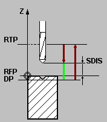
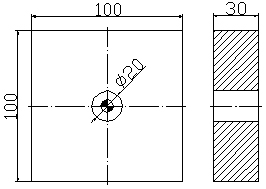
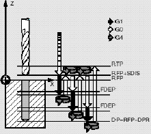
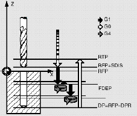
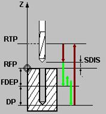
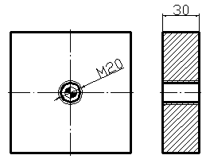
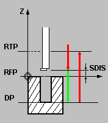

循环 |
说明 |
CYCLE82 |
中心钻孔 |
CYCLE83 |
深孔钻削 |
CYCLE84 |
刚性攻丝 |
CYCLE85 |
铰孔 |
CYCLE86 |
镗孔 |
CYCLE88 |
带停止镗孔 |
CYCLE71 |
端面铣削 |
LONGHOLE |
一个圆弧上的长方形孔 |
POCKET4 |
环形凹槽铣削 |
POCKET3 |
矩形凹槽铣削 |
SLOT1 |
一个圆弧上的键槽 |
SLOT2 |
环行槽 |
1. 编程
CYCLE82（RTP，RFP，SDIS，DP，DPR，DTB）
RTP |
Real |
返回平面（绝对坐标） |
RFP |
Real |
参考平面（绝对坐标） |
SDIS |
Real |
安全高度（无正负符号输入） |
DP |
Real |
最后钻孔深度（绝对坐标） |
DPR |
Real |
相对于参考平面的最后钻孔深度（无正负号输入） |
DTB |
Real |
到达最后钻孔深度时的停顿时间（断屑） |
2. 功能
刀具按照设置的主轴速度和进给率钻孔直至输入的最后的钻孔深度。到达最后钻孔深度时允许停顿时间。
3. 操作顺序
循环执行前已到达X Y轴位置：
钻孔位置是所选平面的两个坐标轴中的位置。
循环形成以下的运行顺序：
使用G0回到安全高度。
按循环调用前所设置的进给率（G1）移动到最后的钻孔深度。
在最后钻孔深度处的停顿时间。
使用G0返回到返回平面。
4. 参数说明

RFP和RTP（参考平面和返回平面）
通常，参考平面（RFP）为工件原点。返回平面（RTP）用来设定钻头到达深度后，抬刀的绝对坐标，再移动到下一个位置钻孔。在循环中，返回平面高于参考平面。这说明从返回平面到最后钻孔深度的距离大于参考平面到最后钻孔深度间的距离。
SDIS（安全距离）
安全距离为相对于参考平面刀具抬刀的安全高度，为相对值。
DP（最后钻孔深度）
钻孔深度为参考平面的绝对坐标。
DPR（钻孔深度）
钻孔深度为相对参考平面的相对值。
DTB（停止时间）
到达最后钻孔深度的停顿时间（用来断削），单位为秒。
5. 编程举例

G54 G17 G90；工件基本坐标系设定
T1D1；刀具选择
G00 X0 Y0 Z100 M03 S800
Z50
CYCLE82 (50, 0, 2, -30, 30, 0.5 ) ；调用钻孔循环
M05
M2
1. 编程
CYCLE83（RTP，RFP，SDIS，DP，DPR，FDEP，FDPR，DAM，DTB，DTS，FRF，VARI）
RTP |
Real |
返回平面（绝对坐标） |
RFP |
Real |
参考平面（绝对坐标） |
SDIS |
Real |
安全高度（无符号输入） |
DP |
Real |
最后钻孔深度（绝对坐标） |
DPR |
Real |
相对参考平面的最后钻孔深度（无符号输入） |
FDEP |
Real |
第一次钻孔深度（绝对坐标） |
FDPR |
Real |
相对于参考平面的第一次钻孔深度（无符号输入） |
DAM |
Real |
递减量（无符号输入） |
DTB |
Real |
最后钻孔深度时的停顿时间（断屑） |
DTS |
Real |
起始点处和用于排屑的停顿时间 |
FRF |
Real |
第一次钻孔深度的进给率系数 范围：0.001…1 |
VARI |
Int |
加工类型：断屑=0 排屑=1 |
2. 功能
刀具以设置的主轴速度和进给率开始钻孔，直至最后钻孔深度。深孔钻削是钻头每次进给指定增量退刀排屑，再重复进给直至最后钻孔深度。钻头可以在每次进给深度完以后回到安全距离用于排屑，或者每次退回1mm用于断屑。
3. 操作顺序
循环启动前到达位置：
钻孔位置在所选平面的两个进给轴中。

深孔钻削排屑(VARI=1)

深孔钻削排屑(VARI=0)
循环形成以下动作顺序：
深孔钻削排屑时（VARI=1）
使用G0回到安全高度。
使用G1移动到第一次钻孔深度，进给率为程序调用中的进给率，它取决于参数FRF（进给率系数）。
在最后钻孔深度处的停顿时间（参数DTB）。
使用G0返回到安全高度，用于排削。
起始点停顿时间（参数DTS）。
使用G0回到上次到达的钻孔深度，并保持预留量距离。
使用G1钻削到下一个钻孔深度（持续动作顺序直至到达最后钻孔深度）。
使用G0移动到返回平面。
深孔钻削断削屑时（VARI=0）：
用G0返回到安全高度。
用G1钻孔到起始深度，进给率为程序设定进给率×参数FRF。
最后钻孔深度的停顿时间。
使用G1从当前钻孔深度后退1mm，采用程序设置的进给率（用于断屑）。
使用G1进给率执行下一次钻孔切削（该过程一直重复进行，直至到达最终钻削深度）。
使用G0回到返回平面。
4. 参数说明

说明：
对于参数RIP，RFP，SDIS，DP，DPR，参见CYCLE82。
首先，进行首次钻深，只要不超过总的钻孔深度。
从第二次钻孔开始，到达的深度由上一次钻深减去每次切削量获得的，但要求钻深大于所设置的每次切削量。
当剩余量大于两倍的递减量时，以后的钻削量等于递减量。
最终的两次钻削行程被平分，所以始终大于一半的递减量。
如果第一次的钻深值和总钻深不符，则输出错误信息61107“首次钻深定义错误”而且不执行循环程序。
DTP（停顿时间）
设置到达最终钻深的停顿时间（断屑），单位为秒。
DTS（停顿时间）
起始点的停顿时间只在VARI=1（排屑）是执行。
FRF（进给率系数）
对于此参数，可以输入进给率的系数，该系数只使用于循环中的首次钻孔深度。
VARI（加工类型）
如果参数VARI=0，钻头在每次到达钻深后退回1mm用于断屑。
如果VARI=1（用于排屑），钻头每次移动到参考平面+安全高度。
注意：预期量的大小由循环内部计算所得：
如果钻深为30mm，预期量的值始终是0.6mm。
对于更大钻深，使用公式钻深/50（最大值7mm）。
5. 编程举例
T1 D1 ；刀具选择
G54 G90 G0 F200 ；工件基本坐标系设定
X0 Y0
Z50
M3 S1200
M8
CYCLE83 ( 50.000, 0.000, 2.000, -30.000, ；调用钻孔循环
30.000, -5.000, 5.000, 3.000, 0.000,
0.000, 0.500, 1 )
G0 Z50
M5 M9
M2
1. 编程
CYCLE84（RTP，RFP，SDIS，DP，DPR，DTB，SDAC，MPIT，PIT，SPOS，SST，SST1）
RTP |
Real |
返回平面（绝对坐标） |
RFP |
Real |
参考平面（绝对坐标） |
SDIS |
Real |
安全高度（无符号输入） |
DP |
Real |
最后钻孔深度（绝对坐标） |
DPR |
Real |
相对参考平面的最后钻孔深度（无符号输入） |
DTB |
Real |
停顿时间（断屑） |
SDAC |
Int |
循环结束后的旋转方向 值：3，4，或5（用于M3，M4和M5） |
MPIT |
Real |
螺距由螺纹尺寸决定（有符号）范围3（用于M3）…48（用于M48）
；符号决定了在螺纹中的旋转方向 |
PIT |
Real |
螺纹由螺距决定（有符号）范围：0.001…2000.000mm
； 符号决定了在螺纹中的旋转方向 |
SPOS |
Real |
循环中主轴定位停止角度 |
SST |
Real |
攻丝进给速度 |
SST1 |
Real |
退回速度 |
2. 功能
刀具以设置的主轴转速和进给率进行攻丝，直至最终螺纹深度，用于刚性攻丝。
注意：
只有主轴在技术上进行位置控制，才可以使用CYCLE84。对于带补偿夹具的攻丝，需要一个另外的循环CYCLE840。
3. 操作顺序
循环启动前到达位置：
孔位置在所选平面的两个进给轴中。
循环形成以下动作顺序：
使用G0回参考平面加安全高度处。
主轴定位停止（值在参数SPOS中）以及将主轴转换为进给轴模式。
攻丝至最终深度.，速度为SST。
螺纹深度处停留时间（参数DTB）。
退回到参考平面加安全高度处，速度为SST1且方向相反。
使用G0退回到返回平面；通过在循环调用前重新设置有效的主轴速度以及SDAC下设置的旋转方向，从而改变主轴模式。
4. 参数说明

说明：
对于参数RTP，RFP，SDIS，DP，DPR，参见CYCLE82
DTB（停顿时间）
停顿时间以秒编程。攻螺纹时，建议忽略停顿时间。
SDAC（循环结束后的旋转方向）
在SDAC下设置循环结束后的旋转方向，循环内部自动执行攻丝时的反方向。
MPIT和PIT（作为螺纹大小或者螺距）
可以将螺纹的值定义为螺纹大小（公称螺纹只在M2和M8之间）或一个值（螺距）。不需要的参数在调用中省略或赋值为零。
RH或LH螺纹由螺距参数符号定义：
正值→RH（用于M3）
负值→LH（用于M4）
如果两个螺纹螺距参数的值有冲突，循环将产生报警61001“螺纹螺距错误”且循环终止。
SPOS（主轴角度）
攻丝前，使用SPOS命令使主轴准确定位停止并转换成位置控制。SPOS为主轴角度。
SST（速度）
参数SST包含用于攻丝的主轴转速。
SST1（退回速度）
使用G332设置攻丝完退回的速度。如果该参数的值为零，则按照SST下设置的速度退回。
5. 编程举例

T1D1 ；刀具选择
G54 G90 G0 F200 ；工件基本坐标系设定
X0 Y0
Z50
M3 S1200
M8
CYCLE84 ( 50.000, 0.000, 2.000, -20.000, ；调用攻丝循环
20.000, , 4, 20, ,
0.000, 200.000, 400.000)
Z50
M5 M9
M2
1. 编程
CYCLE85（RTP，RFP，SDIS，DP，DPR，DTB，FFR，RFF）
RTP |
Real |
返回平面（绝对坐标） |
RFP |
Real |
参考平面（绝对坐标） |
SDIS |
Real |
安全高度（无符号输入） |
DP |
Real |
最后铰孔深度（绝对坐标） |
DPR |
Real |
相对参考平面的最后铰孔深度（无符号输入） |
DTB |
Real |
最后铰孔深度时停顿时间（断屑） |
FFR |
Real |
铰孔进给率 |
RFF |
Real |
退回进给率 |
2. 功能
刀具按设置的主轴转速和进给率铰孔直至最后深度。切削和退刀的进给率分别是参数FFR和RFF的值。
3. 操作顺序
循环启动前到达位置：
铰孔位置在所选平面的两个进给轴中。
循环形成以下动作顺序：
使用G0回到参考平面加安全高度处。
使用G1并且按参数FFR所设置的进给率铰孔至最终深度。
最后铰孔深度时停顿时间。
使用G1返回到参考平面加安全高度处，进给率是参数FFR所设置值。
使用G0退回到返回平面。
4. 参数说明

说明：
对于参数RTP，RFP，SDIS，DP，参见CYCLE82。
DTP（停顿时间）
DTB设置到最后铰孔深度时的停顿时间，单位为秒。
FFR（进给率）
铰孔时FFR下设置的进给率值有效。
RFF（退回进给率）
从孔底退回到参考平面加安全高度时，RFF下设置的进给率值有效。
5. 编程举例
(如图7.3-2)
G54 G90 G17 ；工件基本坐标系设定
G0 X0 Y0 Z100 M03 S800 F200
T5D1 ；刀具选择
Z50
CYCLE85 ( 50, 0, 2, -30, 30, 0.5, 100, 200 ) ；调用铰孔循环
M05
M2
1. 编程
CYCLE86（RTP，RFP，SDIS，DP，DRP，DTB，SDIR，RPA，RPO，RPAP，SPOS）
RTP |
Real |
返回平面（绝对坐标） |
RFP |
Real |
参考平面（绝对坐标） |
SDIS |
Real |
安全高度（无符号输入） |
DP |
Real |
最后镗孔深度（绝对坐标） |
DRP |
Real |
相对参考平面的最后镗孔深度（无符号输入） |
DTB |
Real |
到最后镗孔深度时停顿时间（断屑） |
SDIR |
Int |
旋转方向值：3（用于M3）/4（用于M4） |
RPA |
Real |
平面中第一轴上的返回路径（增量，带符号输入） |
RPO |
Real |
平面中第二轴上的返回路径（增量，带符号输入） |
RPAP |
Real |
镗孔轴上的返回路径（增量，带符号输入） |
SPOS |
Real |
循环中主轴定位停止角度 |
2. 功能
此循环可以用来镗孔，刀具按照设置的主轴转速和进给率进行镗孔，直至达到最后深度。镗孔时，一旦到达镗孔深度，便激活了主轴定位停止功能。然后，主轴从返回平面快速回到设置的返回位置。
3. 操作顺序
循环启动前的到达的位置：
钻孔位置在所选平面的两个进给轴中。
循环形成以下动作顺序：
使用G0回到参考平面加安全高度处。
循环调用前使用G1及所设置的进给率移到最终钻孔深度处。
最后镗孔深度处停顿时间。
主轴定位停止在SPOS下设置的角度。
使用G0在三个方向上返回。
使用G0在镗孔轴方向返回到参考平面加安全高度处。
使用G0在退回到返回平面。
4. 参数说明

说明：
对于参数RTP，RFP，SDIS，DP，DPR，参见CYCLE82
DTB（停顿时间）
DTB设置到最后铰孔深度时的停顿时间，单位为秒。
SDIR（旋转方向）
使用此参数，可以定义循环中进行镗孔时的旋转方向。如果参数的值不是3或4（M3/M4），则产生报警61102“未编程主轴方向”且不执行循环。
RPA（第一轴上的返回路径）
使用此参数定义在第一轴上（横坐标）的返回路径，当到达最后镗孔深度并执行了主轴定位停止后执行此返回路径。
RPO（第二轴上的返回路径）
使用此参数定义在第二轴上（纵坐标）的返回路径，当到达最后镗孔深度并执行了主轴定位停止后执行此返回路径。
RPAP（镗孔轴上的返回路径）
使用此参数定义在镗孔轴上的返回路径，当到达最后镗孔深度并执行了主轴定位停止后执行此返回路径。
SPOS（主轴位置）
使用SPOS设置主轴定位停止的角度，该功能在到达最后钻孔深度后执行。
注意： 主轴在技术上能够进行角度定位，则可以使用CYCLE86。
5. 编程举例
T1 D1 ；刀具选择
G54 G90 G0 X0 Y0 F200 ；基本工件坐标系设定
Z50
M3 S1200
M8
CYCLE86 (50.000, 0.000, 2.000, -30.000, ；调用镗孔循环
30.000, 0.500, 3,
0.000, 0.000, 0.000, 0.000)
Z50
M5 M9
M2
1. 编程
CYCLE88（RTP，RFP，SDIS，DP，DPR，DTB，SDIR）
RTP |
Real |
返回平面（绝对坐标） |
RFP |
Real |
参考平面（绝对坐标） |
SDIS |
Real |
安全高度（无符号输入） |
DP |
Real |
最后镗孔深度（绝对坐标） |
DRP |
Real |
相对参考平面的最后镗孔深度（无符号输入） |
DTB |
Real |
最后镗孔深度时停顿时间（断屑） |
SDIR |
Int |
旋转方向值：3（用于M3）4（用于M4） |
2. 功能
刀具按照设置的主轴转速和进给率进行镗孔，直至到达最后镗孔深度。
3. 操作顺序
循环启动前的到达的位置：
镗孔位置在所选平面的两个进给轴中。
循环形成以下动作顺序：
使用G0回到参考平面加安全高度处。
循环调用前使用G1及所设置的进给率进给到最终镗孔深度处。
最后镗孔深度处停顿时间。
使用G1 返回到参考平面加安全距离处，进给率是由参数RFF设定。
使用G0在退回到返回平面。
4. 参数说明

说明：
对于参数RTP，RFP，SDIS，DP，DPR，参见CYCLE82
DTB（停顿时间）
DTB设置到最后铰孔深度时的停顿时间，单位为秒。
SDIR（旋转方向）
所设置的旋转方向对于到最后镗孔深度的距离有效，如果参数的值不是3或4（M3/M4），则产生报警61102“未编程主轴方向”及循环终止。
5. 编程举例
N10 T1 D1
N20 G17 G54 G90 F1 S450 ；基本工件参数设定
N30 G0 X80 Y90 Z105 ；接近钻孔位置
N40 CYCLE88（50，0，2，-30，30，1，4） ；主轴反镗孔循环
N50 M2 ；程序结束
编程
CYCLE71 (_RTP, _RFP, _SDIS, _DP, _PA, _PO, _LENG, _WID, _STA,_MID, _MIDA,
_FDP, _FALD, _FFP1, _VARI, _FDP1)
参数
下面的输入参数始终要求：
_RTP real 退回平面（绝对）
_RFP real 基准面（绝对）
_SDIS real 安全距离（加到基准面，不输入符号）
_DP real 深度（绝对）
_PA real 起始点，横坐标（绝对）
_PO real 起始点，纵坐标（绝对）
_LENG real 矩形在第一轴上的长度，增量。
由符号给出此角（由此角标注尺寸）。
_WID real 矩形在第二轴上的长度，增量。
由符号给出此角（由此角标注尺寸）。
_STA real 矩形纵向轴和平面第一轴之间的夹角（横坐标，不输入符号）；
值范围:0° ≤?_STA ??180°
_MID real 最大进刀深度（不输入符号）
_MIDA real 在平面中进行剥离时最大的进刀宽度，作为数值（不输入符号）
_FDP real 切削方向空运行行程（增量，不输入符号）
_FALD real 深度方向精加工余量（增量，不输入符号）。在精加工加工方式中_FALD表示平
面中的剩余材料。
_FFP1 real 表面加工的进给
_VARI integer 加工方式：（不输入符号）
个位：
值： ?1...粗加工
2...精加工
十位：
值： ?1...平行于横坐标，在一个方向
2...平行于纵坐标，在一个方向
3...平行于横坐标，方向交替
4...平行于纵坐标，方向交替
_FDP1 real 在平面横向进给方向溢出行程（增量，不输入符号）
编程
LONGHOLE (RTP, RFP, SDIS, DP, DPR, NUM, LENG, CPA, CPO, RAD, STA1, INDA,FFD, FFP1, MID)
参数
RTP real 退回平面（绝对）
RFP real 基准面（绝对）
SDIS real 安全距离（不输入符号）
DP real 长方形孔深度（绝对）
DPR real 相对于基准面的长方形孔深度（不输入符号）
NUM integer 长方形孔个数
LENG real 长方形孔长度（不输入符号）
CPA real 圆弧的圆心，横坐标（绝对）
CPO real 圆弧的圆心，纵坐标（绝对）
RAD real 圆弧半径（不输入符号）
STA1 real 起始角
INDA real 增量角度
FFD real 深度方向的进给
FFP1 real 表面加工的进给
MID real 一个横向进给的最大进刀深度（不输入符号）
编程
POCKET4 (_RTP, _RFP, _SDIS, _DP, _PRAD, _PA, _PO, _MID, _FAL, _FALD,
_FFP1, _FFD, _CDIR, _VARI, _MIDA, _AP1, _AD, _RAD1, _DP1)
参数
下面的输入参数始终要求：
_RTP real 退回平面（绝对）
_RFP real 基准面（绝对）
_SDIS real 安全距离（加到基准面，不输入符号）
_DP real 凹槽深度（绝对）
_PRAD real 凹槽半径
_PA real 凹槽中心点，横坐标（绝对）
_PO real 凹槽中心点，纵坐标（绝对）
_MID real 最大进刀深度（不输入符号）
_FAL real 槽边缘的精加工余量（不输入符号）
_FALD real 底部精加工余量（不输入符号）
_FFP1 real 表面加工的进给
_FFD real 深度方向的进给
_CDIR integer 铣削方向：（不输入符号）
值： ?0...同向铣削 (与主轴转向一致)
1...逆向铣削
2...用 G2 (与主轴转向无关)
3...用 G3
_VARI integer 加工方式：（不输入符号）
个位：
值： ?1...粗加工
2...精加工
十位：
值：0...以G0垂直于凹槽中心
1...以G1垂直于凹槽中心
2...以螺旋轨迹
下面的参数可以选择进行规定，它们确定插入方案以及扩孔时的搭接：（不输入符号）
_MIDA real 在平面中扩孔时最大的进刀宽度，作为数值
_AP1 real 毛坯尺寸，凹槽半径
_AD real 毛坯尺寸，槽到基准面的深度
_RAD1 real 插入时螺旋轨迹的半径（与刀具中心点轨迹相关）
_DP1 real 每360°-旋转时插入深度，在螺旋轨迹上
编程
POCKET3 (_RTP, _RFP, _SDIS, _DP, _LENG, _WID, _CRAD, _PA, _PO, _STA, _MID,
_FAL, _FALD, _FFP1, _FFD, _CDIR, _VARI, _MIDA, _AP1, _AP2, _AD, _RAD1,
_DP1)
参数
下面的输入参数始终要求：
_RTP real 退回平面（绝对）
_RFP real 基准面（绝对）
_SDIS real 安全距离（加到基准面，不输入符号）
_DP real 凹槽深度（绝对）
_LENG real 凹槽长度，在标注拐角尺寸时带符号
_WID real 凹槽宽度，在标注拐角尺寸时带符号
_CRAD real 凹槽拐角半径（不输入符号）
_PA real 凹槽基准点，横坐标（绝对）
_PO real 凹槽基准点，纵坐标（绝对）
_STA real 凹槽纵向轴和平面第一轴之间的夹角（横坐标，不输入符号）；
值范围:0° ≤?_STA ??180°
_MID real 最大进刀深度（不输入符号）
_FAL real 槽边缘的精加工余量（不输入符号）
_FALD real 底部精加工余量（不输入符号）
_FFP1 real 表面加工的进给
_FFD real 深度方向的进给
_CDIR integer 铣削方向：（不输入符号）
值： ?0...同向铣削 (与主轴转向一致)
1...逆向铣削
2...用 G2 (与主轴转向无关)
3...用 G3
_VARI integer 加工方式：（不输入符号）
个位：
值： ?1...粗加工
2...精加工
十位：
值： ?0...以G0垂直于凹槽中心
1...以G1垂直于凹槽中心
2...以螺旋轨迹
3...以凹槽纵向轴摆动
下面的参数可以选择进行规定，它们确定插入方案以及扩孔时的搭接：（不输入符号）
_MIDA real 在平面中扩孔时最大的进刀宽度，作为数值
_AP1 real 毛坯尺寸，凹槽长度
_AP2 real 毛坯尺寸，槽宽度
_AD real 毛坯尺寸，槽到基准面的深度
_RAD1 real 在插入时螺旋轨迹半径（与刀具中心点轨迹有关）或者摆动运动时最大
的再入角
_DP1 real 每360°-旋转时插入深度，在螺旋轨迹上
编程
SLOT1 (RTP, RFP, SDIS, DP, DPR, NUM, LENG, WID, CPA, CPO, RAD, STA1, INDA,
FFD, FFP1, MID, CDIR, FAL, VARI, MIDF, FFP2, SSF, _FALD, _STA2)
参数
RTP real 退回平面（绝对）
RFP real 基准面（绝对）
SDIS real 安全距离（不输入符号）
DP real 键槽深度（绝对）
DPR real 相对于基准面的键槽深度（不输入符号）
NUM integer 键槽数量
LENG real 键槽长度（不输入符号）
WID real 键槽宽度（不输入符号）
CPA real 圆弧的圆心，横坐标（绝对）
CPO real 圆弧的圆心，纵坐标（绝对）
RAD real 圆弧半径（不输入符号）
STA1 real 起始角
INDA real 增量角度
FFD real 深度方向的进给
FFP1 real 表面加工的进给
MID real 一个横向进给的最大进刀深度（不输入符号）
CDIR integer 键槽加工的铣削方向
值：0...同向铣削 (与主轴转向一致)
1...逆向铣削
2...用 G2 (与主轴转向无关)
3...用 G3
FAL real 键槽边缘的精加工余量（不输入符号）
VARI integer 加工方式（不输入符号）个位：
值： ?0...全套加工
1...粗加工
2...精加工
十位：
值：0...以 G0 垂直
1...以 G1 垂直
2...以 G1 摆动
MIDF real 精加工最大进刀深度
FFP2 real 精加工进给
SSF real 精加工时速度
_FALD real 键槽底部精加工余量
_STA2 real 摆动运动时最大插入角
功能
循环SLOT1是一个组合的粗加工－精加工循环。使用该循环您可以加工以圆弧排列的键槽，其纵向轴径向对齐。与长方形孔相反，这里要给键槽宽规定一个值。
编程
SLOT2 (RTP, RFP, SDIS, DP, DPR, NUM, AFSL, WID, CPA, CPO, RAD, STA1, INDA,
FFD, FFP1, MID, CDIR, FAL, VARI, MIDF, FFP2, SSF, _FFCP)
参数
RTP real 退回平面（绝对）
RFP real 基准面（绝对）
SDIS real 安全距离（不输入符号）
DP real 键槽深度（绝对）
DPR real 相对于基准面的键槽深度（不输入符号）
NUM integer 键槽数量
AFSL real 用于键槽长度的角度（不输入符号）
WID real 环形槽宽度（不输入符号）
CPA real 圆弧的圆心，横坐标（绝对）
CPO real 圆弧的圆心，纵坐标（绝对）
RAD real 圆弧半径（不输入符号）
STA1 real 起始角
INDA real 增量角度
FFD real 深度方向的进给
FFP1 real 表面加工的进给
MID real 一个横向进给的最大进刀深度（不输入符号）
CDIR integer 环形槽加工的铣削方向
值：2 (用于 G2)
3 (用于 G3)
FAL real 键槽边缘的精加工余量（不输入符号）
VARI integer 加工方式
个位：
值：0=综合加工
1=粗加工
2=精加工
十位 (自软件版本 SW 6.3起)
值：0=以G0并在直线上由槽到槽的定位
1=以进给并在环形轨道上由槽到槽的定位
MIDF real 精加工最大进刀深度
FFP2 real 精加工进给
SSF real 精加工时速度_FFCP(自软件版本)
real 中间定位进给，环形轨道，单位毫米/分钟，该循环要求一个铣刀带“过中心的端面齿切削”（DIN844）。
功能
循环SLOT2是一个组合的粗加工－精加工循环。
使用该循环您可以加工环形槽，这些槽位于一个圆弧上。